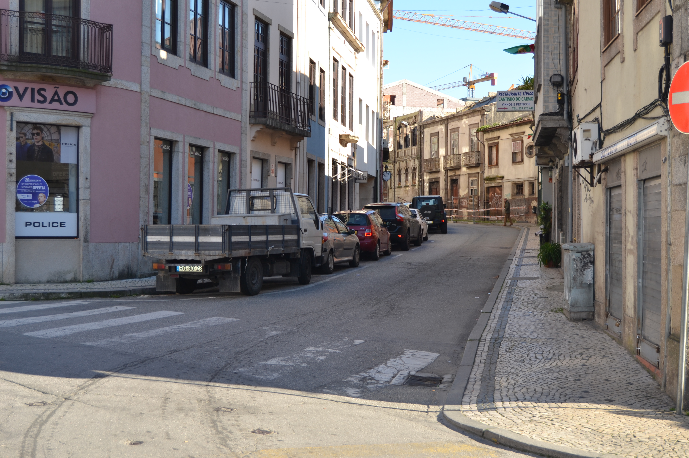
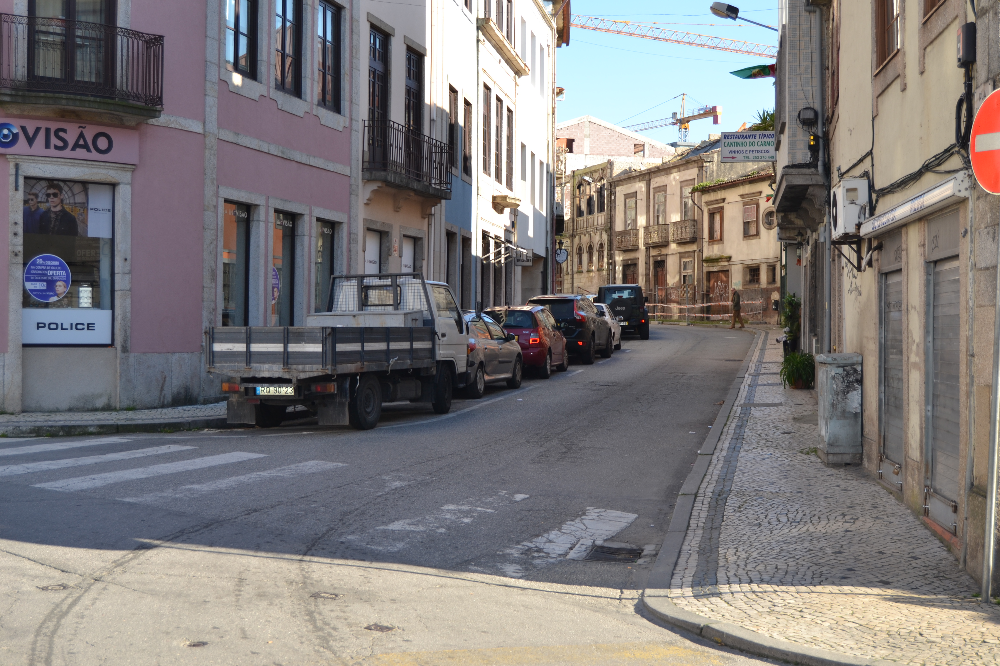

A sua fundação, remontará talvez aos inícios do séc. XVI. Marginando a muralha medieval, fazia ligação entre os dois novos e amplos campos então abertos, de Santa Ana e da Vinha.
No seu extremo Este existia, desde a Idade Média, uma fonte, conhecida pela Fonte da Cárcova ou Cárcoda.
Embora a sua ocupação se tenha iniciado de imediato (p.ex. o prazo do Cabido mais antigo nesta rua data de 1531), ee incidiu apenas sobre o lado Norte, porque no mapa de Braunio não se vê ainda nenhuma construção encostada à muralha.
Em 1750 mostrava bem a razão por que foi denominada, em data que desconehcemos, de rua dos Mercadores: o rés-do-chão era totalmente ocupado com largas portas de madeira que durante o dia se abriam para afzer o comércio.
De resto é predominantemente ocupada com prédios de 3 andares, e janelas bracarenses, e poucas varandas e gelosias. Diferentes são apenas os prazos 5, 6 e sobretudo o 7, onde se vê uma construção setecentista já de certa dimensão, com duas varandas, «molduras» de pedra nas aberturas e, sobretudo, um dos vãos extremos da casa tem mais um piso, reminiscência talvez de opções estilísticas mais arcaicas.
Das 27 casas aqui desenhadas e que correspondem apenas ao lado Norte da rua, 10 eram prazos do Cabido.
Desde 1865 que passou a ser oficialmente denominada de rua dos Capelistas.
Aberta em data desconhecida. No Tombo do Cabido (cª 1369-80), já figura este topónimo.
Estabelecida a ligação entre o largo dos Penedos e os espaços onde bastante mais tarde, nos meados do séc. XVII, se construiu a igreja e convento do Carmo.
Em 1750, era uma rua que alternava, um pouco a esmo, casas de 1, 2 ou 3 pisos, de bom ou mau desenho, de famílias pobres ou ricas, numa indefinição absoluta: vêem-se aqui casas grandes, com bom trabalho de pedra e casas do tipo de porta com janela ao lado, no piso térreo. Só com uma leitura dos prazos se poderá definir o tipo de vivência que nela se fazia, o que nos parece poder dar resultados muitíssimo interessantes.
Das 27 casas aqui desenhadas e que correspondem apenas ao lado Sul da rua, 18 eram prazos do Cabido.
Mantém o nome de rua do Carvalhal.
Não existem casas nesta rua.
 Vista 2:

Vista 2:

 Rua da Fonte da Carcova- Sul
Rua da Fonte da Carcova- Sul